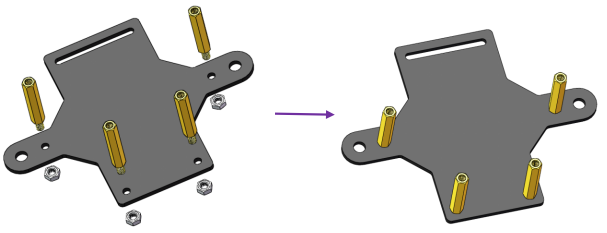

組み立てを続ける¶
警告
バッテリーを取り付けて電源スイッチをONにスライドさせてから、組み立てのプロセス全体でサーボインストールを実行し続けてください。
ステアリングサーボの組み立て¶
2つの**M2x8ネジ**と**M2ナット**を使ってステアリングサーボを上部プレートに取り付ける（サーボワイヤーの方向に注意してください）。

フロントハーフシャーシ¶
**ロッカーアーム固定ネジ**（最短）で**ステアリングリンケージ**をロッカーアームに接続する。

ホイールを上部プレートに入念に取り付ける。

4つの**M3x25銅製スタンドオフ**と**M3ナットでフロントハーフシャーシ**を組み立てる。
次に、組み立てられたフロントハーフシャーシを、スタンドオフを穴に合わせている上部プレートに置く。

入念に持ち、上下を逆にして、4本の**M3x8ネジ**でスタンドオフと上部プレートを固定する。

以下に示すように、組み立てられた**パン＆チルトプレート**、**ガスケットプレート**と**カメラマウントプレート**を**ロッカーアーム固定ネジ**で固定角度で組み立てる:
注釈
サーボが故障した場合、手でサーボを回さないでください。

同様に、サーボシャフトが90度に回転していることを確認する。次に、以下に示す角度で、**パン＆チルトベースプレート**を**ロッカーアーム固定ネジ**と**ガスケットプレート**で組み立てる。

2つの**M3x10ネジ**と**M3ナット**を使用して、**パン＆チルトプレート**を車に取り付ける。

カメラを組み立てる¶
カメラを取り出し、カメラマウントに鋏む。USBケーブルをRaspberry PiのUSBポートに接続する。
これで、アセンブリ全体が完了した。おめでとう！今すぐ車の電源を切ることができる！バッテリーを充電することを忘れないでください。